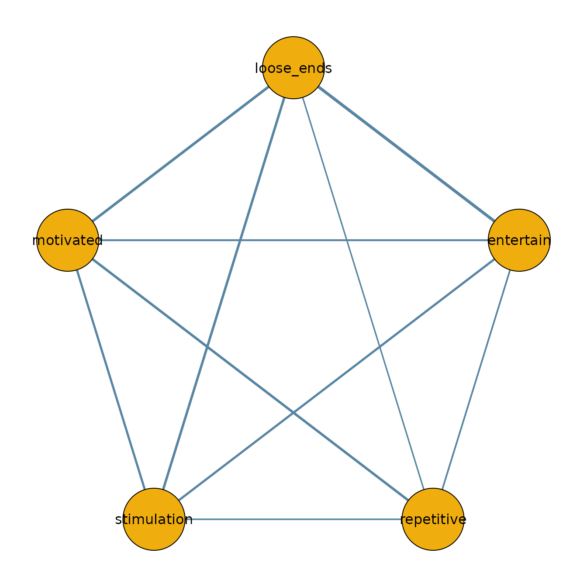

Introduction
The function bgmCompare() extends bgm() to
independent-sample designs. It estimates whether edge weights and
category thresholds differ across groups in an ordinal Markov random
field (MRF).
Posterior inclusion probabilities indicate how plausible it is that a group difference exists in a given parameter. These can be converted to Bayes factors for hypothesis testing.
Fitting a model
fit = bgmCompare(x = data_french, y = data_english, seed = 1234)
#> Note: 0.03% of transitions hit the maximum tree depth (1 of 4000).
#> Check efficiency metrics such as effective sample size (ESS) to ensure
#> sufficient exploration of the posterior.Note: During fitting, progress bars are shown in interactive sessions. In this vignette, they are suppressed for clarity. Sampling can take a while; the progress bars usually help track progress.
Posterior summaries
The summary shows both baseline effects and group differences:
summary(fit)
#> Posterior summaries from Bayesian grouped MRF estimation (bgmCompare):
#>
#> Category thresholds:
#> parameter mean mcse sd n_eff Rhat
#> 1 loose_ends(baseline, c1) -0.935 0.002 0.092 2908.743 1.002
#> 2 loose_ends(baseline, c2) -3.797 0.005 0.182 1623.639 1.002
#> 3 loose_ends(baseline, c3) -7.620 0.010 0.343 1148.591 1.002
#> 4 loose_ends(baseline, c4) -0.866 0.002 0.093 3476.258 1.001
#> 5 loose_ends(baseline, c5) -3.810 0.005 0.190 1393.124 1.001
#> 6 loose_ends(baseline, c6) -0.935 0.002 0.092 2908.743 1.002
#> ... (use `summary(fit)$main` to see full output)
#>
#> Pairwise interactions:
#> parameter mean mcse sd n_eff Rhat
#> 1 loose_ends-entertain(baseline) 0.169 0 0.013 2402.610 1.000
#> 2 loose_ends-repetitive(baseline) 0.127 0 0.012 2748.191 1.001
#> 3 loose_ends-stimulation(baseline) 0.067 0 0.012 2309.394 1.001
#> 4 loose_ends-motivated(baseline) 0.086 0 0.013 2743.658 1.001
#> 5 entertain-repetitive(baseline) 0.137 0 0.012 1795.782 1.001
#> 6 entertain-stimulation(baseline) 0.000 0 0.003 3703.263 1.043
#> ... (use `summary(fit)$pairwise` to see full output)
#>
#> Inclusion probabilities:
#> parameter mean sd mcse n0->0 n0->1 n1->0
#> loose_ends (main) 0.006 0.077 0.002 3960 15 15
#> entertain (main) 0.020 0.142 0.002 3838 80 79
#> repetitive (main) 0.542 0.498 0.019 1530 302 302
#> stimulation (main) 0.041 0.199 0.004 3697 137 138
#> motivated (main) 0.022 0.148 0.003 3832 77 77
#> loose_ends-entertain (pairwise) 0.001 0.027 0.001 3994 2 2
#> n1->1 n_eff Rhat
#> 9 1834.193 1.054
#> 2 3965.963 1.005
#> 1865 717.566 1.007
#> 27 3092.806 1.001
#> 13 3112.715 1.012
#> 1 2002.253 1.157
#> ... (use `summary(fit)$indicator` to see full output)
#>
#> Note: NA values are suppressed in the print table. They occur when an indicator
#> was constant (all 0 or all 1) across all iterations, so sd/mcse/n_eff/Rhat
#> are undefined; `summary(fit)$indicator` still contains the NA values.
#>
#> Group differences (main effects):
#> parameter mean sd mcse n_eff Rhat
#> 1 loose_ends(diff_1, c1) -0.060 0.769 0.023 1093.372 1.002
#> 2 loose_ends(diff_1, c2) -0.005 0.066 0.001 3476.258 1.001
#> 3 loose_ends(diff_1, c3) -0.013 0.168 0.004 1820.910 1.002
#> 4 loose_ends(diff_1, c4) -0.023 0.295 0.008 1393.124 1.001
#> 5 loose_ends(diff_1, c5) -0.031 0.400 0.012 1150.410 1.003
#> 6 loose_ends(diff_1, c6) -0.042 0.541 0.016 1102.135 1.004
#> ... (use `summary(fit)$main_diff` to see full output)
#>
#> Group differences (pairwise effects):
#> parameter mean sd mcse n_eff Rhat
#> 1 loose_ends-entertain(diff_1) 0.000 0.000 0 3703.263 1.043
#> 2 loose_ends-repetitive(diff_1) 0.001 0.005 0 654.114 1.006
#> 3 loose_ends-stimulation(diff_1) 0.000 0.000 0 2282.193 1.008
#> 4 loose_ends-motivated(diff_1) 0.000 0.001 0 2488.637 1.054
#> 5 entertain-repetitive(diff_1) 0.000 0.000 0 858.942 1.007
#> 6 entertain-stimulation(diff_1) 0.000 0.000 0 2995.724 1.010
#> ... (use `summary(fit)$pairwise_diff` to see full output)
#>
#> Use `summary(fit)$<component>` to access full results.
#> See the `easybgm` package for other summary and plotting tools.You can extract posterior means and inclusion probabilities:
coef(fit)
#> $main_effects_raw
#> baseline diff1
#> loose_ends(c1) -0.9346758 -2.238412e-04
#> loose_ends(c2) -2.5152524 2.329107e-03
#> loose_ends(c3) -3.7971890 1.581665e-03
#> loose_ends(c4) -5.0859349 2.108898e-03
#> loose_ends(c5) -7.6195482 -8.293397e-04
#> loose_ends(c6) -10.1302432 -3.127366e-03
#> entertain(c1) -0.8657605 -2.010142e-04
#> entertain(c2) -2.2393669 -9.881878e-05
#> entertain(c3) -3.8102509 2.333523e-04
#> entertain(c4) -5.1641479 1.882708e-04
#> entertain(c5) -7.0294075 -5.396557e-05
#> entertain(c6) -9.5566471 6.352678e-04
#> repetitive(c1) -0.1371057 -5.246791e-03
#> repetitive(c2) -0.6592514 -9.847751e-03
#> repetitive(c3) -1.0832087 -2.275284e-03
#> repetitive(c4) -1.8604680 5.746837e-03
#> repetitive(c5) -3.2431821 1.490932e-02
#> repetitive(c6) -5.0211682 1.511247e-02
#> stimulation(c1) -0.5441949 -3.288892e-03
#> stimulation(c2) -1.7833843 -9.375738e-04
#> stimulation(c3) -2.5295498 -1.549781e-03
#> stimulation(c4) -3.6144167 -3.335215e-03
#> stimulation(c5) -5.0955560 -3.141699e-03
#> stimulation(c6) -7.0666861 -5.875934e-03
#> motivated(c1) -0.5562042 -1.472018e-03
#> motivated(c2) -1.8055152 -6.181207e-04
#> motivated(c3) -3.2926412 1.311099e-03
#> motivated(c4) -4.7868481 2.658434e-03
#> motivated(c5) -6.7829386 -2.740243e-04
#> motivated(c6) -9.1467207 2.208747e-03
#>
#> $pairwise_effects_raw
#> baseline diff1
#> loose_ends-entertain 0.16949828 0.0001541165
#> loose_ends-repetitive 0.05794003 0.0234353318
#> loose_ends-stimulation 0.12706573 0.0009476138
#> loose_ends-motivated 0.14115806 -0.0003566004
#> entertain-repetitive 0.06662928 0.0047600914
#> entertain-stimulation 0.10925180 0.0018888687
#> entertain-motivated 0.08591363 0.0048695060
#> repetitive-stimulation 0.05558655 0.0006952176
#> repetitive-motivated 0.13738216 0.0134510678
#> stimulation-motivated 0.10792773 0.0001560633
#>
#> $main_effects_groups
#> group1 group2
#> loose_ends(c1) -0.9345639 -0.9347878
#> loose_ends(c2) -2.5164169 -2.5140878
#> loose_ends(c3) -3.7979798 -3.7963982
#> loose_ends(c4) -5.0869894 -5.0848805
#> loose_ends(c5) -7.6191335 -7.6199629
#> loose_ends(c6) -10.1286795 -10.1318069
#> entertain(c1) -0.8656600 -0.8658610
#> entertain(c2) -2.2393175 -2.2394163
#> entertain(c3) -3.8103676 -3.8101342
#> entertain(c4) -5.1642421 -5.1640538
#> entertain(c5) -7.0293805 -7.0294345
#> entertain(c6) -9.5569647 -9.5563294
#> repetitive(c1) -0.1344823 -0.1397291
#> repetitive(c2) -0.6543275 -0.6641753
#> repetitive(c3) -1.0820710 -1.0843463
#> repetitive(c4) -1.8633415 -1.8575946
#> repetitive(c5) -3.2506367 -3.2357274
#> repetitive(c6) -5.0287244 -5.0136119
#> stimulation(c1) -0.5425504 -0.5458393
#> stimulation(c2) -1.7829155 -1.7838531
#> stimulation(c3) -2.5287749 -2.5303247
#> stimulation(c4) -3.6127491 -3.6160843
#> stimulation(c5) -5.0939852 -5.0971269
#> stimulation(c6) -7.0637481 -7.0696240
#> motivated(c1) -0.5554681 -0.5569402
#> motivated(c2) -1.8052062 -1.8058243
#> motivated(c3) -3.2932968 -3.2919857
#> motivated(c4) -4.7881773 -4.7855189
#> motivated(c5) -6.7828016 -6.7830756
#> motivated(c6) -9.1478250 -9.1456163
#>
#> $pairwise_effects_groups
#> group1 group2
#> loose_ends-entertain 0.16942122 0.16957534
#> loose_ends-repetitive 0.04622237 0.06965770
#> loose_ends-stimulation 0.12659193 0.12753954
#> loose_ends-motivated 0.14133636 0.14097976
#> entertain-repetitive 0.06424923 0.06900933
#> entertain-stimulation 0.10830737 0.11019623
#> entertain-motivated 0.08347888 0.08834838
#> repetitive-stimulation 0.05523894 0.05593416
#> repetitive-motivated 0.13065662 0.14410769
#> stimulation-motivated 0.10784970 0.10800576
#>
#> $indicators
#> loose_ends entertain repetitive stimulation motivated
#> loose_ends 0.00600 0.00075 0.13725 0.07025 0.14125
#> entertain 0.00075 0.02050 0.02525 0.03050 0.33875
#> repetitive 0.13725 0.02525 0.54175 0.00675 0.01400
#> stimulation 0.07025 0.03050 0.00675 0.04125 0.00600
#> motivated 0.14125 0.33875 0.01400 0.00600 0.02250Visualizing group networks
We can use the output to plot the network for the French sample:
library(qgraph)
french_network = matrix(0, 5, 5)
french_network[lower.tri(french_network)] = coef(fit)$pairwise_effects_groups[, 1]
french_network = french_network + t(french_network)
colnames(french_network) = colnames(data_french)
rownames(french_network) = colnames(data_french)
qgraph(french_network,
theme = "TeamFortress",
maximum = 1,
fade = FALSE,
color = c("#f0ae0e"), vsize = 10, repulsion = .9,
label.cex = 1, label.scale = "FALSE",
labels = colnames(data_french))